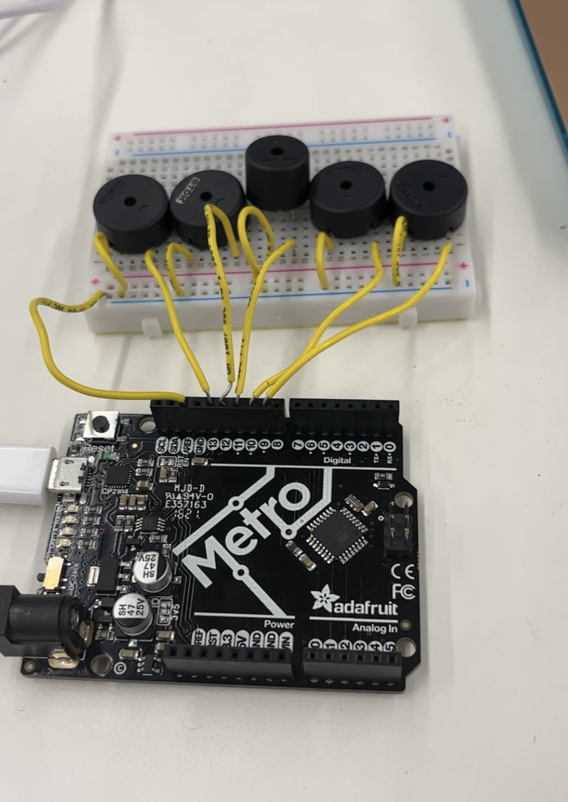
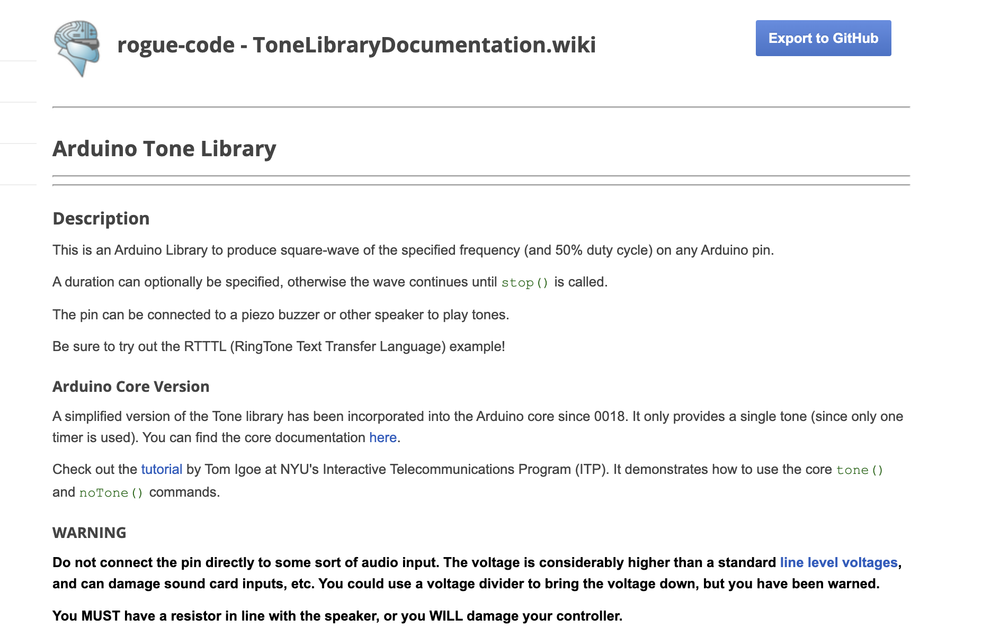

<div class="container-fluid">
<h3 style="text-align: center;"> Week 7: Electronic Output Devices </h3>
<h4 style="color: black;background-color:#6EDCF7;"> 5 tone piano! </h4>
<p>I was really excited for this week’s assignment because I was inspired by what my friend <a href="https://sophiecwebster.github.io/PHYSCI-70/"> Sophie Webster </a> did when she took PS70 last year! She used piezo buzzers and capacitive sensors to make a little piano and that seemed like so much fun. I wanted to make sure not to just copy Sophie’s idea so I brainstormed a couple changes I could make to the vision for the piano before I started. My two favorite ideas were to either make it possible to record what you play and have it play back to you (with either a time limit or note limit) or to have multiple buzzers so you could play 2 notes at the same time. I decided to go with idea 2 because it seemed more exciting to me, but alas, it turned out to be much harder (if not just impossible) than I had anticipated. I wish I had gone with the first idea because I think I know how I could have coded it, but by the time I had struggled with idea 2 for long enough, I was a bit too worn out to go back to idea 1, so I ended up with just a simple 5 note piano scale. Still I learned a lot in the struggle process and I love the piano itself. And I do think I could fairly easily make the recording feature (though maybe I’m so wrong and this would also be impossible) so I’d be excited to come back to this for fun in the future. </p>
<p>First, I set up one buzzer to make sure I could get it working like we did in class (first video below). I realized I would need to use smaller buzzers to fit them all nicely on my one small breadboard so I went in search of baby buzzers and I was able to nicely fit 5 -- perfect for a 5 note major scale. </p>
<p>Next, I separately set up capacitive sensors that used the touch of a finger as ground. I started by testing this with an LED and the serial monitor sensor readings and once it worked, I tried connecting it to a buzzer (videos 2 and 3 below). For once, things were working on mostly my first try, which was a great feeling!
<center><video width="200" height="auto" controls>
<source src="piezotest1.mp4" type="video/mp4">Your browser does not support the video tag.</video>
<video width="200" height="auto" controls>
<source src="touchtest.mp4" type="video/mp4">Your browser does not support the video tag.</video>
<video width="200" height="auto" controls>
<source src="touchbuzzertest.MOV.mp4" type="video/mp4">Your browser does not support the video tag.</video> </center>
<p>I finished setting up my 5 buzzers and 5 corresponding sensors, and my piano was ready to go! I used a combination of the example codes we used for the buzzers and capacitive sensors separately as well as the code Sophie used to make my code. I was pleasantly surprised by how simple and straightforward it was! The one problem I encountered was solved when I realized it's important to have "noTone" if statements for every time the sensor stops being pressed (in the original version of my code I just had the tone function be called when a sensor is pressed and noTone when no sensors are pressed). Sophie's wonderful work and documentation spared me from having to figure out the frequencies for the C major scale for myself, so that made my life much easier. One small thing I was a bit confused by but that was easy to fix was why the sensor readings would be different between the capacitive sensors (some would regularly reach much higher numbers when I pressed them with others). It was a small enough difference that I could just lower the threshold needed to trigger the buzzer, but I did wonder what was different between the sensors whenn they were theoretically built and wired identically (and this was more than just the normal difference based on the amount of contact).
Here is my code:
<pre><code>
#include < CapacitiveSensor . h > //html erases this when I post my code unless I add the spaces so remove them!
int buzzer1 = 9;
int buzzer2 = 10;
int buzzer3 = 11;
int buzzer4 = 12;
int buzzer5 = 13;
CapacitiveSensor note1 = CapacitiveSensor(7,6);
CapacitiveSensor note2 = CapacitiveSensor(7,5);
CapacitiveSensor note3 = CapacitiveSensor(7,4);
CapacitiveSensor note4 = CapacitiveSensor(7,3);
CapacitiveSensor note5 = CapacitiveSensor(7,2);
void setup() {
Serial.begin(9600);
pinMode(buzzer1, OUTPUT);
pinMode(buzzer2, OUTPUT);
pinMode(buzzer3, OUTPUT);
pinMode(buzzer4, OUTPUT);
pinMode(buzzer5, OUTPUT);
}
void loop() {
long value1 = note1.capacitiveSensor(9000);
long value2 = note2.capacitiveSensor(9000);
long value3 = note3.capacitiveSensor(9000);
long value4 = note4.capacitiveSensor(9000);
long value5 = note5.capacitiveSensor(9000);
Serial.println(value1);
Serial.println(value2);
Serial.println(value3);
Serial.println(value4);
Serial.println(value5);
if (value1 > 300) tone(buzzer1, 131);
else if (value1 < 500) noTone(buzzer1);
if (value2 > 300) tone(buzzer2, 147);
else if (value2 < 500) noTone(buzzer2);
if (value3 > 300) tone(buzzer3, 165);
else if (value3 < 500) noTone(buzzer3);
if (value4 > 300) tone(buzzer4, 175);
else if (value4 < 500) noTone(buzzer4);
if (value5 > 300) tone(buzzer5, 196);
else if (value5 < 500) noTone(buzzer5);
}
</code></pre>
And here is a video of me enjoying my piano:
<center><video width="300" height="auto" controls>
<source src="littlelamb.mp4" type="video/mp4">Your browser does not support the video tag.</video> </center>
Now I was ready for my level up idea but apparently getting 2 buzzers to play at the same time with arduino is a very difficult thing that many folks on the internet have complained and brainstormed about. Because the arduino can’t multitask, it’s next to impossible to command 2 buzzers simultaneously with the tone function. I did an intense deep dive into arduino forums to see if anyone had figured out a way to do it but came back with nothing but validation of my struggles and the joy of camaraderie. I had the idea to instead of actually playing notes when the sensors are touched, to have the notes all playing from the start and just write a bunch of if statements that mutes all but the notes being pressed (with an if statement to mute all of them if there are none being pressed). In my head this felt logical as a way to somewhat circumvent the challenge and the only problem I could foresee was the timing being a bit wonkier/delayed when you play multiple notes. For this to work, I just needed a way to initially command all the buzzers to play at the same time, which while a similar problem to the one above, seemed to be something people believed was a bit more doable. After a lot of searching I did find a zip library I could download to make a version of the tone function that wouldn’t create a block. However, it came with a warning that it might overload your microcontroller (something about the resistors being exactly right and I don’t trust my circuit building enough yet) so I decided not to risk it. I’m a little bummed that I couldn't get this to work, especially because for once I felt confident in my coding abilities and really understood the logic of what I was trying to program (a big positive change from how I felt last week), so I’m hoping maybe I can come back to this - maybe even just at the end of the year when I could afford to put my microcontroller’s life at risk :)
As a finishing touch, I mounted my capacitive sensors onto a piece of wood to give the piano some stability. So even though I'm disappointed I couldn't execute the entirety of my grand vision for this piano, I still really enjoyed making it and am happy with what I have so far.
</p>
<center> <video width="600" height="auto" controls>
<source src="finalpiano.mp4" type="video/mp4"> Your browser does not support the video tag. </video> </center>